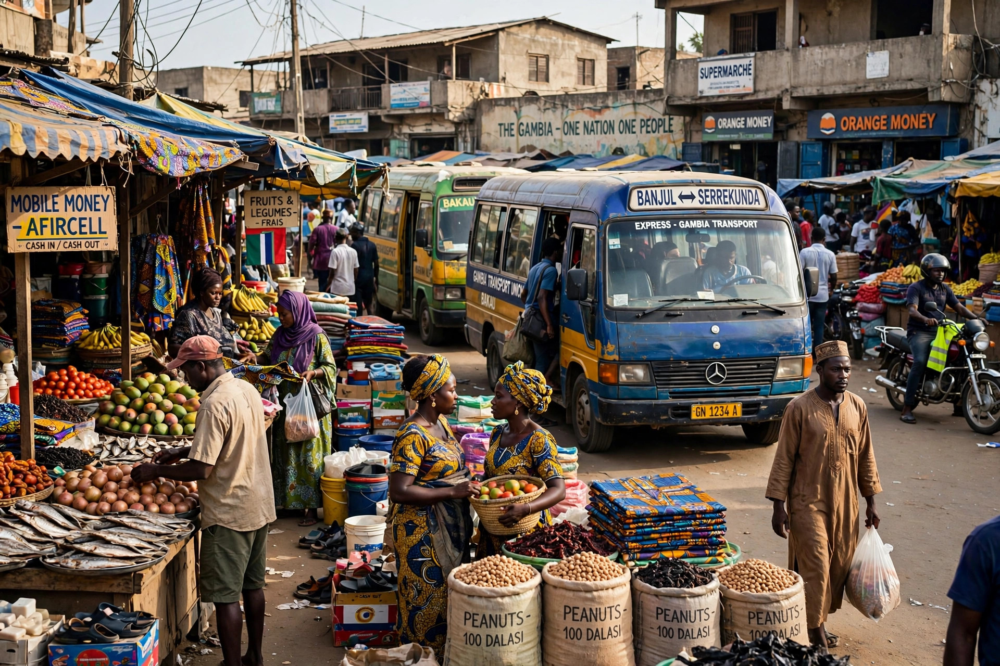

From Wikipedia, the free encyclopedia
| Kanifing | |
|---|---|
 | |
| Country | The Gambia |
| District | Kanifing Municipality |
| Population (2013 census) | 382,096 |
| Coordinates | 13°27′N 16°40′W |
Kanifing is a major urban district in the Gambia, forming the core of Kanifing Municipal Council (KMC), the local government area that covers the greater Banjul metropolitan region. With a population of over 380,000 in the 2013 census, it is the most populous municipality in the country — a dense urban zone just south of the capital, Banjul, and adjacent to the resort town of Bakau.
Kanifing Municipality stretches along the Atlantic coast and inland south of Banjul Island, encompassing neighbourhoods such as Kanifing itself, Kololi, Bakoteh, Fajara, Ebo Town and Tallinding. The area grew rapidly in the late 20th century as Banjul's overflow population moved south; it is now a continuous urban agglomeration of shops, markets, government offices, hotels and the country's main tourism strip along the Kololi–Fajara beaches.
The municipality is the economic engine of the Gambia: it hosts the main commercial districts, the Kairaba Avenue business corridor, the national stadium (Independence Stadium at Bakau), the University of the Gambia's campuses, and the country's principal media houses and banks. Serekunda, the Gambia's largest town, lies within the municipal area.
Kanifing is governed by the Kanifing Municipal Council, one of the country's eight local government areas. The council was established in its modern form in the 1990s and is headed by a mayor. Rapid unplanned growth has left the municipality with chronic pressures on waste management, drainage and road infrastructure.